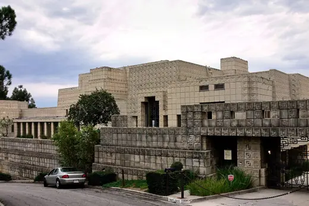
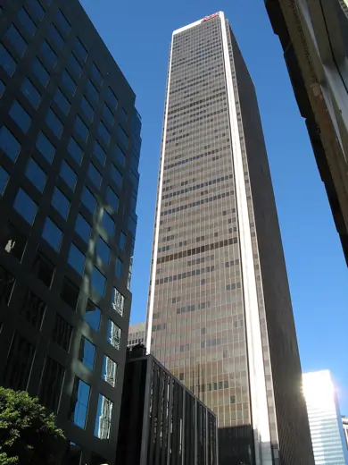
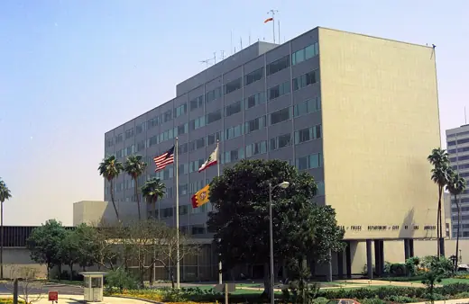
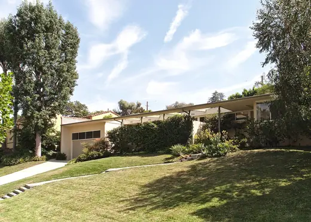
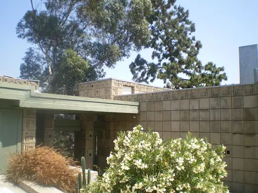
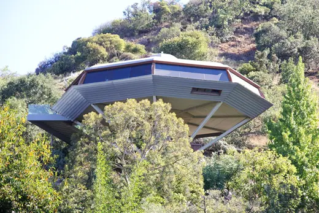

Buildings 33
Sort
 Eames House1949 · Los Angeles
Eames House1949 · Los Angeles Caltrans District 7 Headquarters2004 · Los Angeles
Caltrans District 7 Headquarters2004 · Los Angeles Museum of Contemporary Art, Los Angeles1986 · Los Angeles
Museum of Contemporary Art, Los Angeles1986 · Los Angeles Theme Building1961 · Los Angeles
Theme Building1961 · Los Angeles Binoculars Building1991 · Los Angeles
Binoculars Building1991 · Los Angeles Television City1952 · Los Angeles
Television City1952 · Los Angeles
Ennis House1925 · Los Angeles
Aon Center (Los Angeles)1973 · Los Angeles Walt Disney Concert Hall2003 · Los Angeles
Walt Disney Concert Hall2003 · Los Angeles Cathedral of Our Lady of the Angels2002 · Los Angeles
Cathedral of Our Lady of the Angels2002 · Los Angeles Capitol Records Building1956 · Los Angeles
Capitol Records Building1956 · Los Angeles Century Plaza Towers1975 · Los Angeles
Century Plaza Towers1975 · Los Angeles
Parker Center1955 · Los Angeles Baldwin Hills Village (Village Green)1942 · Los Angeles
Baldwin Hills Village (Village Green)1942 · Los Angeles John Sowden House1926 · Los Angeles
John Sowden House1926 · Los Angeles
Case Study House No. 11948 · Los Angeles Getty Center1997 · Los Angeles
Getty Center1997 · Los Angeles Lovell Health House1929 · Los Angeles
Lovell Health House1929 · Los Angeles Sheats-Goldstein Residence1963 · Los Angeles
Sheats-Goldstein Residence1963 · Los Angeles VDL Research House1932 · Los Angeles
VDL Research House1932 · Los Angeles Emerson College Los Angeles2014 · Los Angeles
Emerson College Los Angeles2014 · Los Angeles Jardinette Apartments1928 · Los Angeles
Jardinette Apartments1928 · Los Angeles
Samuel Freeman House1925 · Los Angeles Case Study House #21 (Bailey House)1959 · Los Angeles
Case Study House #21 (Bailey House)1959 · Los Angeles Charles E. Young Research Library1970 · Los Angeles
Charles E. Young Research Library1970 · Los Angeles Hollyhock House1921 · Los Angeles
Hollyhock House1921 · Los Angeles
Chemosphere (Malin Residence)1960 · Los Angeles Stahl House (Case Study House #22)1960 · Los Angeles
Stahl House (Case Study House #22)1960 · Los Angeles Cinerama Dome1963 · Los Angeles
Cinerama Dome1963 · Los Angeles Mark Taper Forum1967 · Los Angeles
Mark Taper Forum1967 · Los Angeles Sinai Temple (Los Angeles)1956 · Los Angeles
Sinai Temple (Los Angeles)1956 · Los Angeles Pavilion for Japanese Art, LACMA1988 · Los Angeles
Pavilion for Japanese Art, LACMA1988 · Los Angeles Los Angeles County Hall of Records1962 · Los Angeles
Los Angeles County Hall of Records1962 · Los Angeles